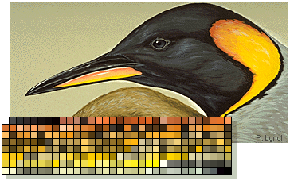
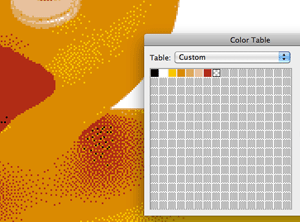

GIF (Graphics Interchange Format) is the file format of choice for graphic images, text buttons, banners and photographic images with limited colour. GIF can support one level of transparency in images and also animation.
When an image is saved as a GIF the file size is compressed. GIF uses two compression techniques to reduce file size:
GIF reduces the number of colours in an image to 256 (8-bit colour). It then stores these colours in a colour look-up table. This is called indexing. The table is saved along with the image and each pixel is indexed to a colour in the table.

This technique works by attempting to group pixels of a similar colour. Where it finds a group of similar pixels it remembers the first pixel x the number of adjacent pixels.
The image is read horizontally from top to bottom, consequently GIF will compress an image with horizontal stripes more successfully than an image with vertical stripes.
File size - 2 kb
File size - 380 bytes
It is possible, in Photoshop and other applications, to choose how colours in the CLUT are selected. Photoshop offers a choice of 7 'palettes'. These are:
GIF offers an option that allows for extra colours in addition to those in the colour look-up table. It does this by dithering colours that are in the CLUT. If, for example, a CLUT contained only blue and yellow it may be able to create green by mixing/dithering blue and yellow pixels together.
